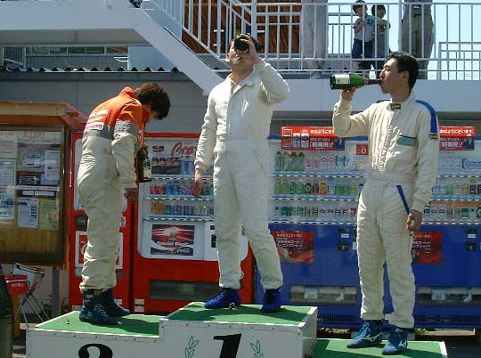
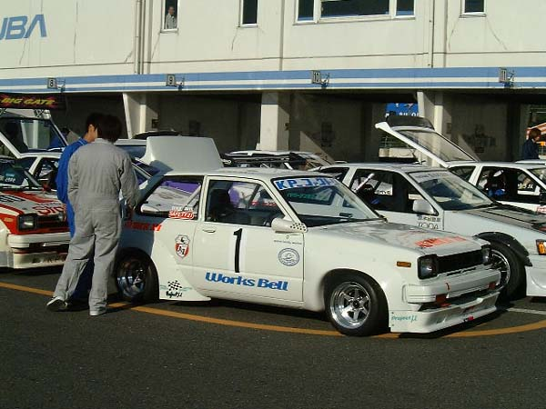
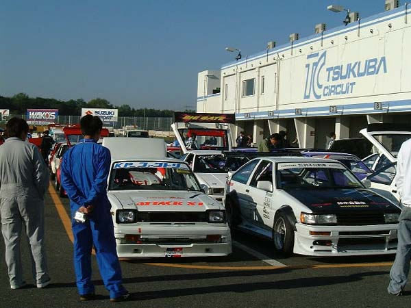
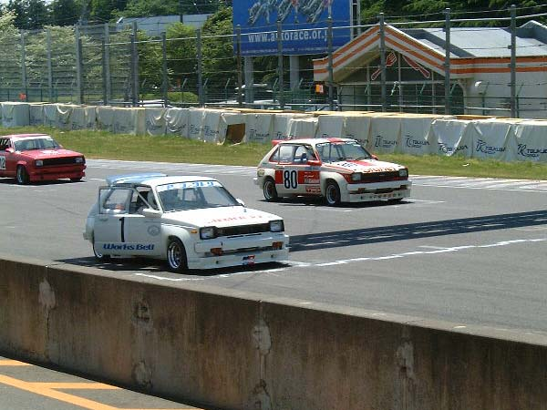
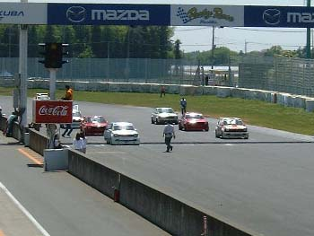
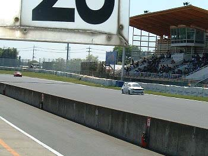

| TOP | ||
|
|
||
| TOP | ||
|
|
||
JCCA TSUKUBA MEETING TSカップ第1戦 |
| 名称：JCCAクラシックカーフェスティバル
筑波ミーティング 会場：筑波サーキット国内公認コース（全長2,045km） 茨城県結城郡千代川村大字村岡 主催，レース主管：日本クラシックカー協会（JCCA） レース公認：日本自動車連盟（JAF） 運営協力：東京自動車クラブ／モータースポーツクラプピット 協力：横浜ゴム（株）／（株）リョーショクリカー／京商（株）／トタル・ルプリカンツジャパン（株） |
|
|
|
| 開催日：2004年4月29日（祝） 天候：晴れ 気温：14℃（予選）〜25℃（決勝） 参加クラス：TSカップ TS-1クラス（1300ccを境にTS-1，TS-2に別けられレースは2クラス混走） 参加台数：TS-1クラス KP61 2台，310サニー1台 計3台 TS-2クラス 310サニー5台 2クラス合計8台 車名：KP-ファクトリースターレット （車番１） ドライバー：田中 信夫 （たなか のぶお） 監督：二瓶 剛志 （にへい つよし） ＜予選＞ 予選は8時34分〜46分までの12分間。 早めにタイムを出しつつ周りの様子を伺いながら決勝に力を温存する作戦。 テスト走行で1分6秒フラットを出していたので、5秒台に入れば周りに関係無く終了予定、 7周目に1分6秒352をマークし、周りのタイムは7秒後半から上がる様子が無かったので終了。 結果、2クラス併せてもトップタイムでポールポジションを獲得。 ＜車両保管＞ 予選を終えて車両状態はトラブル箇所も無くブレーキのエア抜きとタイヤエア確認のみ実施。 決勝に向けての作業中にはギャラリーの方々から数々の応援・励ましを頂きとても嬉しかったです。 ＜決勝＞ ポールポジションからのスタートでタイム的にも余裕があったのでフライングに注意、 1周のフォーメーションを終え再びグリッドに着きスタートを待ちます。 シグナルスタート！ ここで痛恨のスタートミス・・・排気量の違いからも後続のサニー勢にゼロスタートで離され1コーナーには4位で進入。 立ち上がりで接触を避けて1台にパスを許すが、第1ヘアピンで抜き返しオープニングラップは4位で通過。 予選でタイム差が若干あったので、ピットもドライバーも慌てる事無く15周後のゴールでのトップを狙い走行。 4周を終わる頃には3位に浮上するが、流石に決勝では易々とは抜かせてもらえず6周を迎える。 6周目あたりからトップを走るピットロードサニーがトラブルによるペースダウンで2位に浮上。 8周目の最終コーナーでインに入り、そのまま9周目の1コーナー進入でインを刺し1位に浮上。 トップに立った後は少しずつ後続を引き離します。（ピットからはペースキープを指示） そのまま15周を迎え1位にてゴール。 ＜結果＞ 車両のトラブルも無く、ポール・トゥ・ウイン（TS-1クラス1位、総合1位）という最高の結果を得る事が出来ました。 ご協力くださったスポンサー各位、大勢の応援くださった皆様に心より感謝を申し上げます。 今後の目標は更なるタイムアップとグランドスラム。 これからも応援よろしくお願い致します。 （つよし） |
 ウイナーズシャンパンを男らしく一気に飲み干すノブオ |
 |
 |
 スターティンググリッド |
 いよいよスタート・・・緊張の瞬間 |
 スタートの遅れを取戻しトップに躍り出た！ |
|
|
|
|
| 予選 |
| 順位 | 車番 | クラス | 順 | ドライバー | 型式 | 車名 | ベストタイム | 周回 | （トップ差） | Km/h |
| 1 | 1 | 1 | 1 | 田中 信夫 | KP61 | ＫＰファクトリースターレット | 1'06.352 | 7/7 | 110.954 | |
| 2 | 80 | 1 | 2 | 田辺 秀彦 | KP61 | ＫＰ保存協会スターレット | 1'07.807 | 7/7 | 0'01.455 | 108.573 |
| 3 | 40 | 1 | 2 | 柳本 文彦 | B310 | オートサービスやなぎもとサニー | 1'08.543 | 6/9 | 0'02.191 | 107.407 |
| 4 | 12 | 2 | 1 | 中澤 早人 | HB310 | ビッグゲートサニー | 1'09.989 | 4/9 | 0'03.637 | 105.188 |
| 5 | 23 | 2 | 1 | 佐野 孝一 | HB310 | ピットロードサニー | 1'11.588 | 7/7 | 0'05.236 | 102.838 |
| 6 | 32 | 2 | 3 | 中村 善行 | B310 | ピットロードサニー | 1'13.279 | 8/8 | 0'06.927 | 100.465 |
| 7 | 8 | 2 | 3 | 本山 喜広 | HB310 | Ｂｕｌｌｅｔｓサニー | 1'13.897 | 4/5 | 0'07.545 | 99.625 |
| 8 | 44 | 2 | 4 | 神崎 猛 | HB310 | ＢＣＣ Ｆａｃｔｏｒｙサニー | 1'14.477 | 2/3 | 0'08.125 | 98.849 |
決勝 |
| 順位 | 車番 | クラス | 順 | ドライバー | 型式 | 車名 | 周回 | 所要時間 | （トップ差） | Km/h | ベストタイム | 周回 |
| 1 | 1 | 1 | 1 | 田中 信夫 | KP61 | ＫＰファクトリースターレット | 15 | 17'11.002 | 107.109 | 1'07.156 | 14/15 | |
| 2 | 40 | 1 | 2 | 柳本 文彦 | B310 | オートサービスやなぎもとサニー | 15 | 17'17.999 | 0'06.997 | 106.387 | 1'08.134 | 14/15 |
| 3 | 80 | 1 | 3 | 田辺 秀彦 | KP61 | ＫＰ保存協会スターレット | 15 | 17'19.003 | 0'08.001 | 106.285 | 1'07.877 | 8/15 |
| 4 | 32 | 2 | 1 | 中村 善行 | B310 | ピットロードサニー | 15 | 18'03.769 | 0'52.767 | 101.894 | 1'10.591 | 10/15 |
| 5 | 8 | 2 | 2 | 本山 喜広 | HB310 | Ｂｕｌｌｅｔｓサニー | 14 | 17'14.127 | 1Lap | 99.667 | 1'11.971 | 11/14 |
| 6 | 23 | 2 | 1 | 佐野 孝一 | HB310 | ピットロードサニー | 14 | 17'18.117 | 1Lap | 99.284 | 1'07.986 | 3/14 |
| 7 | 12 | 2 | 4 | 中澤 早人 | HB310 | ビッグゲートサニー | 14 | 17'30.972 | 1Lap | 98.069 | 1'08.846 | 5/14 |
| スタート | 12:34'09.000 |
| フィニッシュ | 12:51'20.002 |
| 参加台数 | 8 |
| 出走台数 | 7 |
| ベストタイム | No.1 （田中 信夫） 1'07.156 14/15 109.625km/h |
| クラス | 1:TS-1 2:TS-2 |
|
|
|
|
| TSカップ | |
| 受付 | ６：２０〜６：４０ |
| 車輌検査 | ７：１５〜７：３５ |
| ドライバーズブリーティング | ７：５５〜８：１０ |
| 予選 | ８：３４〜８：４６ |
| メディカルチェック | １０：２０〜１０：５０ |
| ドライバーズブリーティング | １１：１５〜１１：４５ |
| 出走前点検 | １１：５５〜１２：１０ |
| コースイン | １２：２５〜１２：３５ |
| 決勝走行 | １２：３５〜１３：００（１５周） |
| 表彰式 | １４：３０〜 |
|
|
|
|
|
| J's Tipo | 2004年7月号(2004年5月15日発売） No.137 |
|
|
| All Rights Reserved, Copyright(C) 2001-2004,KP-FACTORY |